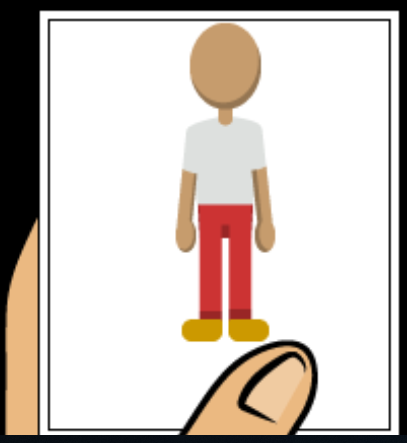
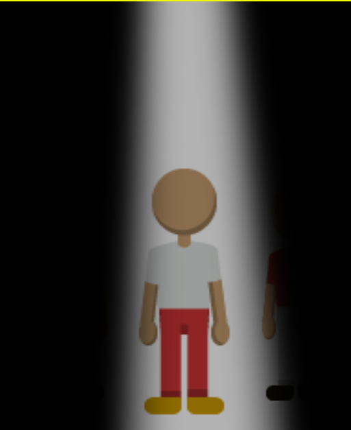

Información
A una persona que haya sido acosador o está practicando el ciberbullying necesita entender que lo que hace está mal, y lo primero que tú (como espectador) necesitas reconocer es que ese tipo de personas deberán de cambiar sus comportamientos lo antes posible para que no tengan grandes problemas en el futuro; por lo tanto no lo encubras, puedes decirlo a tus padres o profesores en privado, para que ellos puedan hacer las medidas necesarias; tampoco no señales a alguien cuando no estes 100% seguro que fue el culpable.
| Condiciones de victoria | |
|  | Cuando has seleccionado a la persona correcta que aparece en la fotografía. |
| Condiciones de derrota | |
|  | Si no elegis al culpable o seleccionas a la persona incorrecta que debió ser el que aparece en la fotografía. |
Controles
 |
Arrastra el mouse sobre las personas. (Estará seleccionado una persona cuando se vea un poco más grande del resto) |